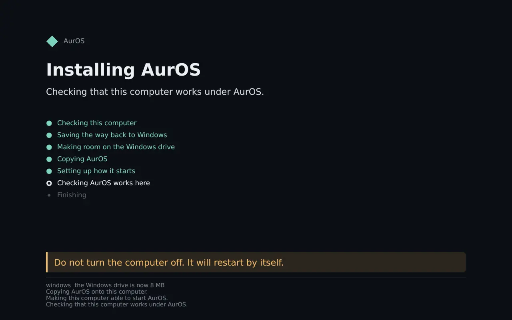

The restart screen · src/aurscreen · its labels, unedited
Seven steps. One of them can’t be undone.
- Checking this computerDrive health, power, Secure Boot, room. If anything is wrong, it stops here and nothing has changed.
- Saving the way back to Windows
- Making room on the Windows drive“This is the only part that cannot be undone. Do not turn the computer off.”
- Copying AurOS
- Setting up how it starts
- Checking AurOS works here
- Finishing

1
restart. The PC goes down in Windows and comes up in AurOS, with your files.
18
instants where the power was cut on purpose. Windows came back from every one, every file byte-identical.
138/138 checks · tools/powercuttest.sh · one firmware, one virtual disk0
real PCs installed so far. Everything above ran on simulated machines under real UEFI firmware. A spare PC is next.